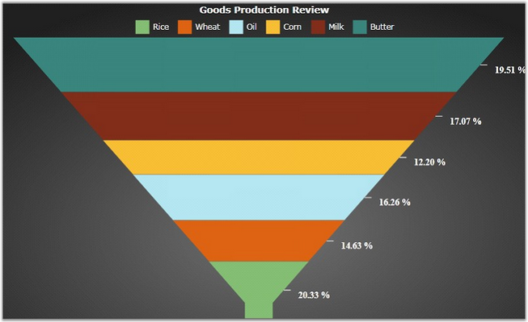

This feature provides support to set colors for Pie, Doughnut, Pyramid and Funnel chart types. It is also used to set colors for large number of series in the Chart Area.
Essential Chart Silverlight supports ten built-in color models. It also allows you to apply your own colors to the Chart. The colors can be initialized by using the ColorModel property of ChartArea class. The following code example illustrates how to initialize and use the Color Palette feature in the Funnel Chart.
|
[XAML]
<syncfusion:ChartArea> <syncfusion:ChartArea.SecondaryAxis> <syncfusion:ChartAxis IsAutoSetRange="True" RangePadding="Normal"/> </syncfusion:ChartArea.SecondaryAxis> </syncfusion:ChartArea> |
|
[C#]
// Create an instance for the Chart and Chart Area. Chart chart = new Chart(); ChartArea area = new ChartArea(); chart.Areas.Add(area);
// Initialize the built-in Color Palette. chart.Areas[0].ColorModel.Palette = ChartColorPalette.EarthTone;
// Initialize custom Color Palette colors. Brush[] colors = new Brush[] { new SolidColorBrush(Color.FromArgb( 0xff, 0x85, 0xbf, 0x75 )), new SolidColorBrush(Color.FromArgb( 0xff, 0xde, 0x64, 0x13 )), new SolidColorBrush(Color.FromArgb( 0xff, 0xb4, 0xe7, 0xf2 )), new SolidColorBrush(Color.FromArgb( 0xff, 0xff, 0xbf, 0x34 )), new SolidColorBrush(Color.FromArgb( 0xff, 0x82, 0x2e, 0x1b )), new SolidColorBrush(Color.FromArgb( 0xff, 0x3a, 0x86, 0x7e )), };
// Initialize the built-in Color Palette. chart.Areas[0].ColorModel.CustomPalette = colors; chart.Areas[0].ColorModel.Palette = ChartColorPalette.Custom; |

Figure 66: Color Palette Colors applied to Funnel Chart